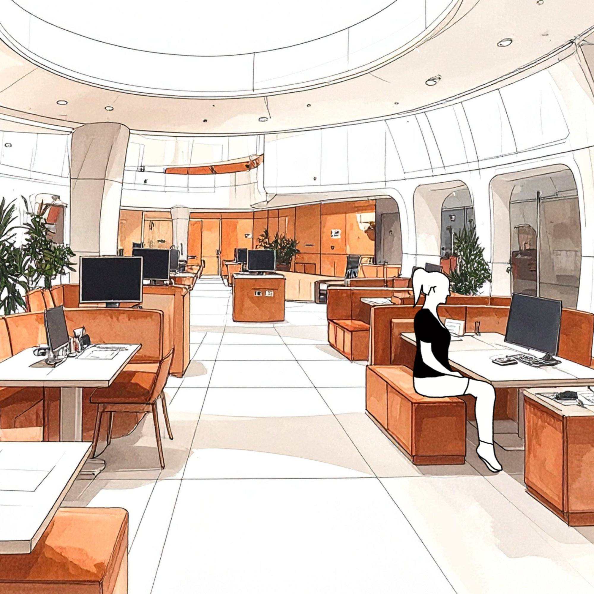
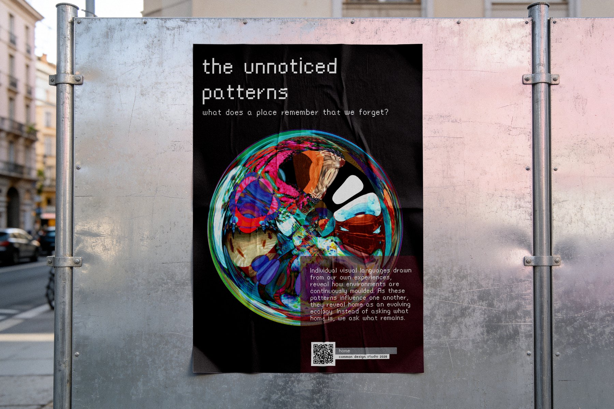
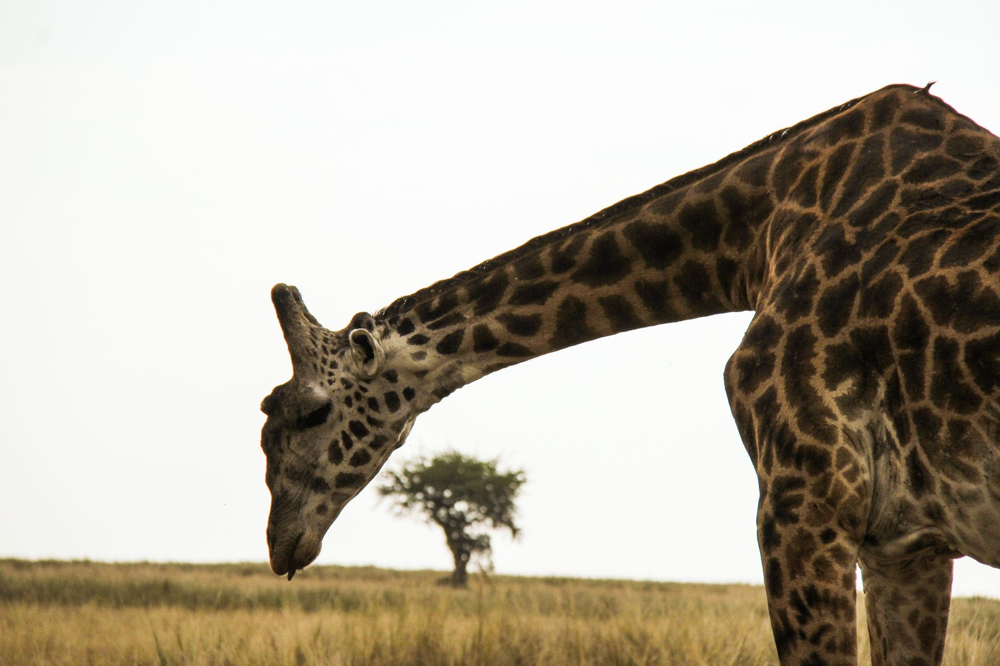
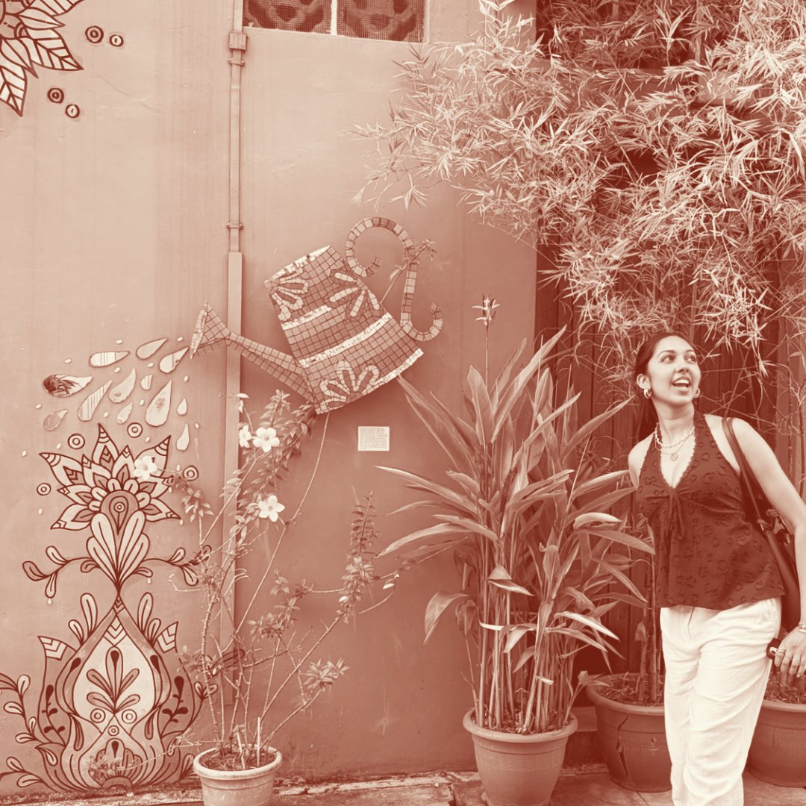

narrative-led designer
click a piece to step into it →







about me
Hi, I'm Nupur, a creative thinker, maker, and designer
If I had to 'blame' something…
it'd probably be growing up across different cultural worlds (don't get me wrong, I wouldn't have it any other way). Though, the numerous countries I've lived in have made somewhere-in-between feel pretty normal to me, so naturally I gravitate towards projects and practices that hold plural perspectives and use design as a form of recognition.
I pull from films I love, art that inspires me, everyday observations that live as scribbles in my journals. All of that shapes how I build context before form.
I'm building a practice that sits between strategy and experience: conceptual and immersive, designing for inclusion, for social causes, and for the kind of resonance that stays with people.

get in touch
open to creative roles, collaborations, mentorship & conversations
nupurjain1502@gmail.com